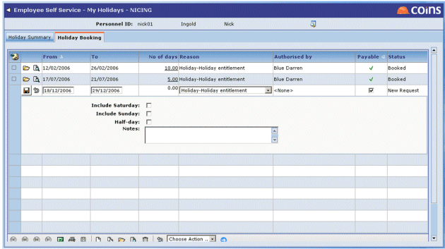
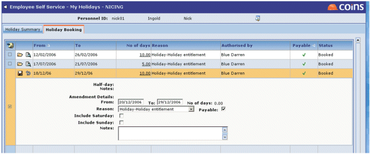

Requesting a :
- Go to My .
- Click the Booking tab.
- Add a new line.

- Enter the dates for which you want to request the , and the reason.
If you are requesting a single day's , you can leave the To date blank - when you save the record fills this in using the From date.
- Click
 .
.
- If you want to choose which days between the start and end dates you want to take as , click the link in the No of Days column. This shows each day as a separate line. You can delete individual days which you do not want to take as .
notifies the people who are set up to approve your requests. They can either approve or deny your request, and will send you a notification by email.
While a is in the 'New Request' status, you can make alterations to it or delete it (approvers will be notified of significant changes by email). Once it is 'Booked' you can only make change requests.
Cancelling a request:
To cancel a booked , either click  or use the Cancel action. This will change the status to 'Cancellation Request' and send emails and actions to the approvers. As before they can approve ( record is deleted) or deny (status returns to 'Booked') the request.
or use the Cancel action. This will change the status to 'Cancellation Request' and send emails and actions to the approvers. As before they can approve ( record is deleted) or deny (status returns to 'Booked') the request.
You can cancel your cancellation request by clicking on the appropriate line - the status will then revert to 'Booked'.
Changing a :
To make an alteration to a booked , either click  or use the Amend action. You can then enter amendment details:
or use the Amend action. You can then enter amendment details:

When you save this, the status will change to 'Amendment Request' and emails and actions will be sent to the approvers.
As with cancellation requests, you can cancel your own amendment request by clicking .
requests - configuration
The System User ID field on the Main tab in Personnel Workbench needs to be filled in for all users (requesters and approvers).
The Authorers need to set for each employee, on the Organation tab in Personnel Workbench.
In order to receive emails the users' email addresses must be entered on the Details tab for each user in Users.